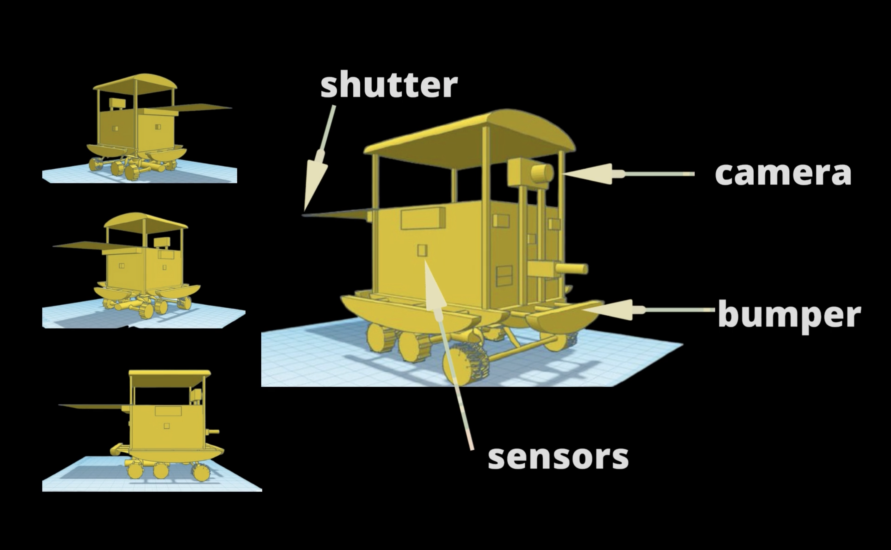

← Back to Experience

Sensor-Driven Navigation
Integrated advanced sensors and traction control to optimize real-time navigation—reducing transmission risks and cutting delivery costs by 25%.
Wooden Chassis Innovation
Engineered a lightweight wooden frame (5% lighter than metal) to improve energy efficiency while maintaining structural integrity.
App-Based Tracking
Collaborated with software team to build a real-time monitoring app, achieving a 30% reduction in delivery times and improved safety.
Optimized Storage System
Developed Python-controlled routines for compartmentalized item placement & retrieval—minimizing unnecessary movement and speeding up operations.